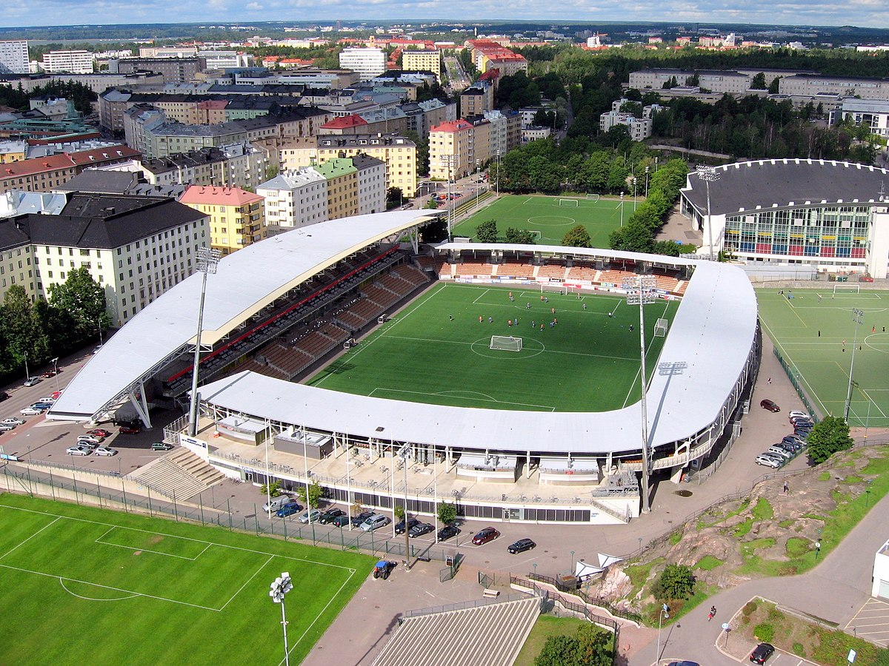

Общая информация
Чемпионат Финляндии по футболу (Вейккауслига) (фин. Veikkausliiga) — высший дивизион в системе футбольных лиг Финляндии.
В соревновании участвуют 12 клубов. Чемпионат длится с апреля по октябрь и проходит в 3 круга (каждая команда проводит по 33 матча). После каждого сезона команда, занявшая 12 место переводится в Юккёнен, а её место занимает победитель этого первенства. Команда занявшая 11 место играет стыковые матчи с 2 командой Юккёнена, победившая команда участвует в Вейккауслиге на следующий сезон.
Официальным спонсором чемпионата является букмекерская компания Вейккаус, благодаря чему лига и получило своё название. Действующий чемпион — КуПС.
Формат турнира
Регулярный сезон + плей-офф
